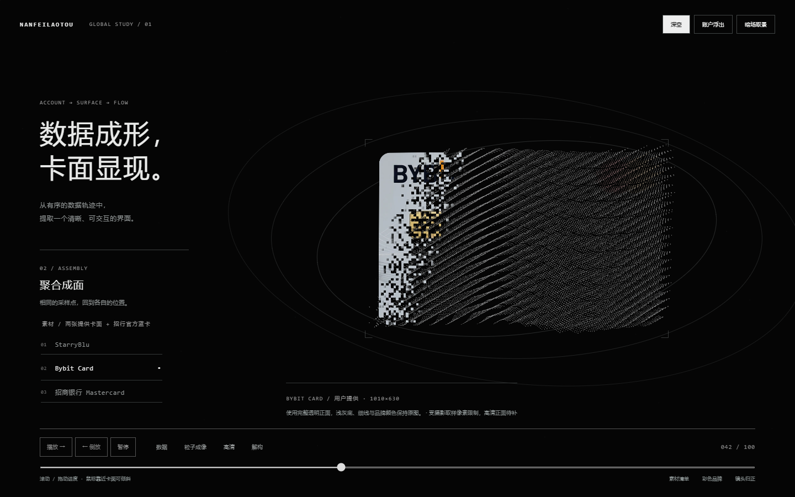
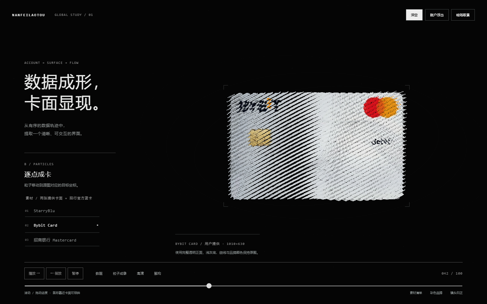
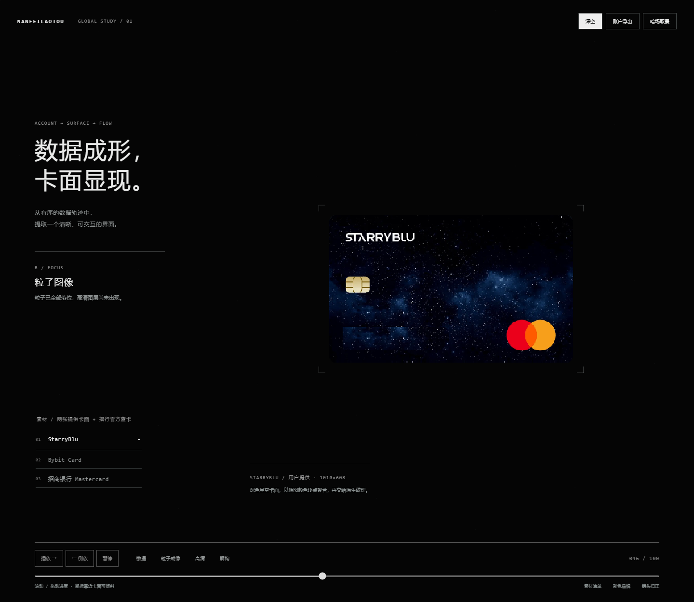
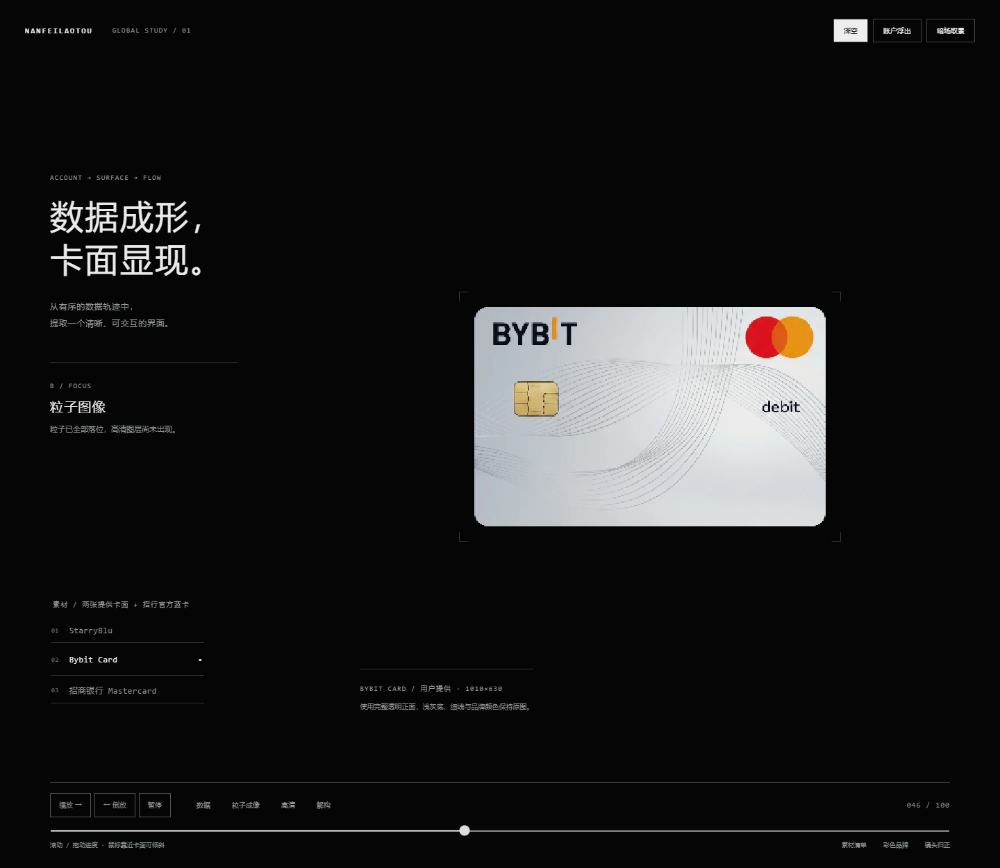
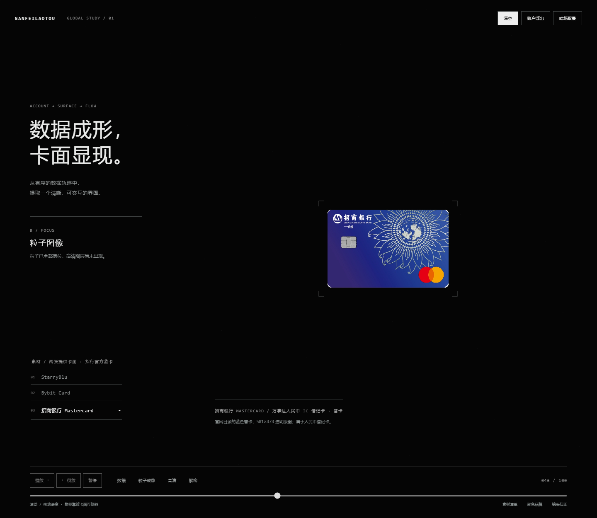
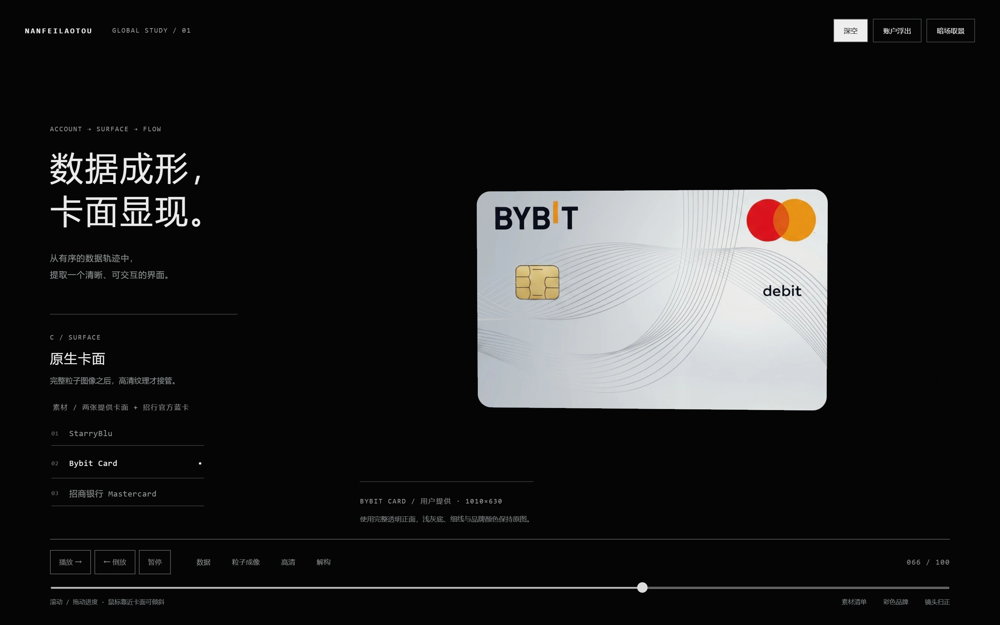
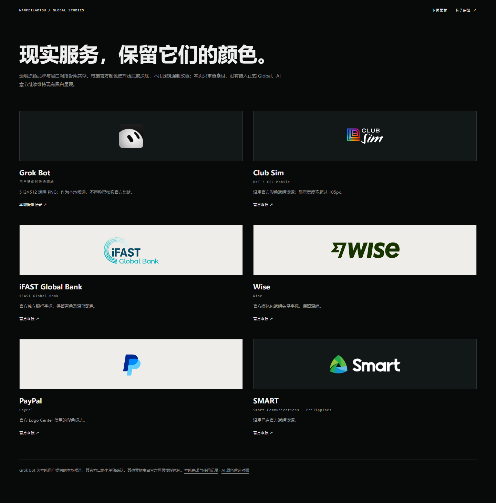

NANFEILAOTOU / CARD FORMATION 02 · 2026-10-17
先由粒子成像，
再交给高清卡面。
本轮纳入提供的 StarryBlu、Bybit 卡面和官方招行蓝卡，移除横向 reveal。首页、正式 Global 和 Personal 没有修改。
同一张素材，对照旧逻辑
左：基线 Shader 在 p .42 已横向露出图片，部分粒子仍未到位。右：新版同样 p .42，只有携带源图颜色的粒子；所有目标落位并完成聚焦后，原生层才开始接管。


三张卡面 · 记录帧审查
以下滑条切换已保存的真实 WebGL 截图，并非另一套动画。q 为统一聚合量；进入和离开同一 q 的 framebuffer 哈希相同。实际连续运动请打开实验页。






q .80–.88 的完整图像只由 64,000 个采样点绘制，高清层不绘制。q .88–.98 才进行短暂全幅接管；离开时 q 递减，以同一逻辑回到粒子和数据流。调试参数 ?debug&pass=surface&p=.46 可验证高清层为空。

高 DPI · 原生卡面与倾斜



现实品牌，保留原色
ClubSIM 沿用官方彩色透明图；iFAST Global Bank、Wise、PayPal 新增官方透明 SVG；Grok Bot 使用本轮提供的候选图标，出处标为用户提供。没有强制去色，没有把集团或模型图标冒充独立产品。

实际检查
三张卡共 36 个绘制门槛、36 组进入 / 离开帧哈希一致；高清层隔离检查、DPR 2、白卡交接亮度、滚轮与倒放、点击 / 键盘、Resize、WebGL 恢复、减少动态效果、无 WebGL 和 390px 触摸布局均有检查。
白卡交接检测区域平均亮度为 214.25–215.08 / 255，没有中段变暗。稳定 650ms 不新增帧或绘制。浏览器错误和失败资源列表为空。
| 窗口 | 回调 CPU 平均 / p95 | 观测 rAF 次/秒 | 采样长任务 |
|---|---|---|---|
| 1920×1080 | 0.131 / 0.200ms | 230.8 | 0 |
| 1440×900 | 0.139 / 0.300ms | 227.9 | 0 |
| 1366×768 | 0.135 / 0.200ms | 227.8 | 0 |
Windows / Chromium 153 / RTX 4080 Laptop / ANGLE D3D11，每个分辨率驱动 150 帧。rAF 节奏不等于最终显示帧率；未测试真实手机、Safari、Firefox 或低端 GPU。本轮未重新测 GPU Timer，不沿用旧版数据。